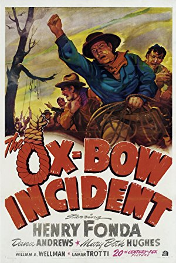

Enjoy Sunday nightat the movies!
Raleigh's oldest and finest nonprofit film society offers classic feature presentations monthly at the Rialto Theatre in Raleigh, NC.
Welcome to The Cinema, Inc.
One of the oldest continuing film societies in the nation, The Cinema, Inc. was founded in 1966 by a group of IBM workers using borrowed projection equipment that was installed in the Raleigh Little Theater. The organization was founded as a nonprofit whose purpose was “the presentation of films of educational, cultural, artistic and historical interest.” After about 15 years the organization moved to the Rialto in the city’s Five Points neighborhood. The group has been screening selections on the second Sunday of each month ever since. Each screening, which averages over 300 attendees, is accompanied by film notes emailed to members.
Announcing Our 53rd Season
The 2018-2019 season, shown below with titles listed alphabetically, has SOLD OUT. Passes will be mailed to members in late August in time for the first movie of the season.
") Adventures of Prince Achmed, The (Die Abenteuer des Prinzen Achmed) (1926) Bigamist, The (1953) Breaking Away (1979) Children of Paradise (Les Enfants du Paradis) (1945) Ida (2013) Magnificent Ambersons, The (1942) Mulholland Drive (2001) Mysterious Geographic Explorations of Jasper Morello, The (2005) Nora's Will (Cinco días sin Nora) (2008) Ox-Bow Incident, The (1943) Sophie's Choice (1982) Trouble with Harry, The (1955) Wadjda (2012)
Adventures of Prince Achmed, The (Die Abenteuer des Prinzen Achmed) (1926) Bigamist, The (1953) Breaking Away (1979) Children of Paradise (Les Enfants du Paradis) (1945) Ida (2013) Magnificent Ambersons, The (1942) Mulholland Drive (2001) Mysterious Geographic Explorations of Jasper Morello, The (2005) Nora's Will (Cinco días sin Nora) (2008) Ox-Bow Incident, The (1943) Sophie's Choice (1982) Trouble with Harry, The (1955) Wadjda (2012)Screening NEXT
-
 August 12, 2018Directed by Charles Laughton; Starring Robert Mitchum, Shelley Winters, Lillian Gish, James Gleason
August 12, 2018Directed by Charles Laughton; Starring Robert Mitchum, Shelley Winters, Lillian Gish, James Gleason
The Night of the Hunter (Members' Choice!)
USA, 1955, 92 min, B&W, Not Rated
This film is a nightmarish journey through a surreal landscape. Director Charles Laughton establishes a complex mood, toned by contrasts of innocence and evil, humor and menace, spirituality and hypocrisy. Robert Mitchum poses as a preacher, who cozies up to rich women, kills them and runs off with their fortunes. He hears about a stash of stolen money from a guy in jail and hunts down the guy’s wife and two kids to find it. The kids are quick to see through him. A disturbing sense of foreboding grows as he ingratiates himself with the woman and the townsfolk. The final sequence illustrates the clash of conflicting spiritual principles.
Film Notes: Charles Laughton, the great British actor, directed only one film: The Night of the Hunter. It was a commercial and critical failure. Today it is regarded by many as one of the greatest American horror films ever made. The story is set during the Great Depression, and it focuses on the three infamous American obsessions: religion, sex, and money. The great Robert Mitchum plays Harry Powell, a serial killer on the loose who is arrested for stealing a car and subsequently thrown in jail. His cellmate, also a killer and soon to be hanged, shares a secret with him that he has stolen $10,000 and that only his children know where the money is hidden. A few days after his cellmate is hanged, Harry is released from jail. Pretending to be a preacher, he heads straight to his cellmate's home where he immediately befriends his widow, Willa, played by Shelley Winters. Harry convinces her to marry him and she agrees to do it. The children are quite leery of Harry and sense something is not quite right. Harry presses them to reveal where the money is hidden but they stand fast and refuse. Harry goes berserk; the kids run for their lives and end up in the home of an old, religious, and feisty woman who knows how to use a rifle. In the film there is a lot of talk about God, love and hate, and there are hidden messages about each that are remarkably bold in tone. Brilliant questions and answers are exchanged in a manner that reveals plenty about those lives corrupted by prejudice and superstition in America in the mid-twentieth-century. Visually The Night of the Hunter is a marvel. Director of Photography Stanley Cortez treats light and shadow in a way that creates an impressive gothic-noir atmosphere that greatly enhances the narrative. (RW)
Read Roger Ebert's review of The Night of the Hunter at Great Movies. -

Season 53 — September 9, 2018Directed by William A. Wellman; Starring Henry Fonda, Dana Andrews, Mary Beth Hughes, Anthony Quinn
The Ox-Bow Incident
USA, 1943, 75 min, B&W, Not Rated
The story of intolerance and mob mentality is more relevant today than it was in the old west. This is a grim picture, but works to provide a chilling example of subtle evil using powerful dramatics throughout. Gil (Fonda) is a drifter futilely trying to secure normality as he returns to claim a lost loved one. He’s been caught up in a standoff over murder and angry accusations. Men’s lives are on the line as a lynch mob forms. There are exciting tension-packed moments, but the film keeps to a meditative mood, delivering a strong message on the unpredictability of violence and the need to act with logic, not mindless aggression.
-
 Season 53 — October 14, 2018Directed by Alfred Hitchcock; Starring Edmund Gwenn, John Forsythe, Mildred Natwick, Mildred Dunnock
Season 53 — October 14, 2018Directed by Alfred Hitchcock; Starring Edmund Gwenn, John Forsythe, Mildred Natwick, Mildred Dunnock
The Trouble with Harry
USA, 1955, 99 min, Color, PG
The trouble with Harry is that he is dead, and everyone seems to have a different idea of how he died, and what their own culpability is and what should be done with the body. Harry is buried and exhumed several times by various parties, and let’s just say that it gets complicated. This character piece is a quirky take on “whodunits” and introduces both Shirley MacLaine and Jerry Mathers (aka Beaver Cleaver). Light comedy and dark humor easily coexist in the Technicolor glories of a New England autumn.